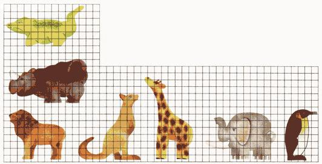
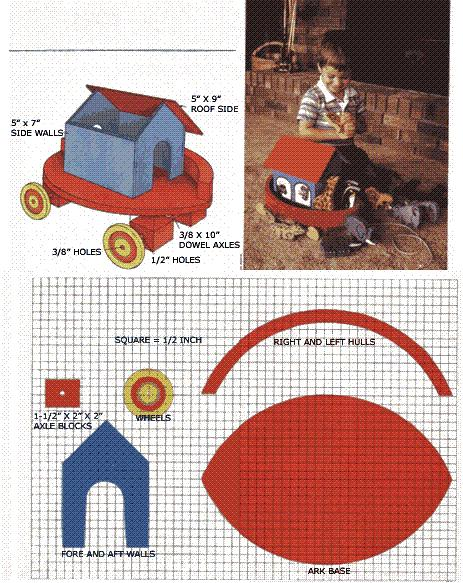

Here's a colorful toddler's toy worth crafting for the little ones on your Christmas list.
Twice over the past year, MOTHER's pages have featured home shop furniture projects (the wooden pie safe in No. 85 and a PVC porch glider in No. 87) developed by Ed and Stevie Baldwin of The Family Workshop, an organization that produces books and syndicated newspaper columns on crafts and woodworking. For our Christmas issue, we've chosen to publish their version of Noah's ark, a delightful child's toy fashioned from common wood scraps.
The Scriptures tell us that the original ark measured 300 cubits in length, stood three stories deep, and was made of gopher wood . . . but you needn't go to anywhere near the trouble that Noah did when you construct this pull-along nautical menagerie for your toddler.
In fact, if you can find about 3 feet of 2 X 6 pine, an equal length of 1 X 8 shelving board, a scrap of 1/2" plywood cut to 12" X 18" dimensions, a 16" X 18" piece of 1/4" plywood or paneling, a 3/8" dowel rod measuring 20" in length, a couple feet of string, a bottle of carpenter's glue, paint, some 3/4" and 1-1/4" wire brads, and a few hours of spare time, you'll be well on your way to building a colorful and educational replica of the legendary livestock lifeboat.
And don't despair if your work space isn't equipped to the hilt. The task will be simplified if you have an upright band saw, but a hand-held saber saw or even a coping saw can be used to trim out the more intricate pieces. Aside from that, you'll also need a tack hammer, a nail set, a drill with 3/8" and 1/2" bits, a ruler, a pencil, scissors, sandpaper, carbon paper, and paintbrushes in trim and artist's sizes.
To ease your woodcutting tasks, we've included down-scaled grid drawings of the ark's major parts and of seven different animals so you'll be able to make paper templates to outline each piece. The right and left hulls-and four 1-1/2" X 2" X 2" axle blocks-should be cut from the 2 X 6 board. The 1/2" plywood can be used to form the four 2"-diameter wheels and the base, and the 1 X 8 will provide enough stock to make seven pairs of creatures, or 14 all told. The cabin can be fabricated completely from your 1/4" plywood section, so long as its parts are sized as follows: the two side walls 5" X 7", the fore and aft walls 5" X 7-1/2" (see grid drawing for shape), one roof side 4-3/4" X 9", and the other roof side 5" X 9". Finally, the dowel rod should be cut in half to create two axles, each 10" in length.
Assembling the ark is simply a matter of gluing the wooden parts together in the proper sequence and securing the joints with brads. Starting with the cabin, cement the side walls to the edges of the fore and aft walls, and tap the shorter nails in place, sinking them with the nail set. Then sand the upper edges of the side walls so the roof leaves will fit flush to the peaks, and glue the shorter roof side to one half of the house, making sure its upper edge is even with the ridge points. The longer roof section should be fastened last so it overlaps its mate's exposed edge. Short brads can be used to lock the roof in place.
Moving on to the boat itself, fasten the right and left hull sections to the base, and sand the pointed end joints to assure a smooth fit. Drill a 1/2" hole through the center of each axle block's narrow side, then attach the blocks to the bottom of the base so they're 21/4" apart and the rear set is 7-1/4" behind the front pair. Slide the 3/8" X 10" axles through the holes so equal amounts of dowel protrude from the four blocks, and then sand and paint the entire hull assembly. While that's drying, you can go ahead and drill 3/8" holes through the centers of the wheels in preparation for gluing them to the axles. When the finish is set, fasten the disks, paint them, and tie a length of string to one of the dowels as a pull cord.
If you wish, you can glue the cabin to the boat deck . . . but before you do, you'll want to paint it in the colors of your choice. We've included some wall designs on our model that you may or may not want to add to yours; if they strike your fancy, use our photo's cow and monkey illustrations as guides.
The animals should be sanded, then painted according to the color scheme presented in our grid drawings. The facial features and line details can be transferred to the wood by placing carbon paper behind the paper templates; should you want to go to the trouble of decorating both sides of each beast, simply fold the carbon sheet so the non-inked sides are together, then do your tracing. The reverse image will automatically appear on the back of the template, and that can be conveyed to the opposite side of the wooden shape, using the same technique as before.
Once completed, the ark offers a warmth equal to that of any crafted wooden toy . . . moreover, it boasts a bit of history. So even if you're not expecting a flood, you might want to follow Noah's example in time for this holiday season!
EDITOR'S NOTE: In addition to the Noah's ark toy, The Family Workshop (P.O. Box 159, Bixby, OK 74008) is offering plans for five other play projects-including a gingerbread dollhouse, a country rocking horse, a dump truck, scrap wood toys, and wooden biplanes-in a $9.95 package (specify Project No. 3444-2). The Workshop's $2.95 woodworking and craft project catalog is also available from the address above. *
|
 |
 |
|